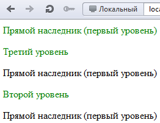
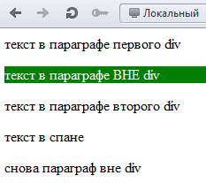
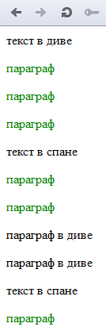
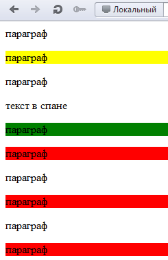
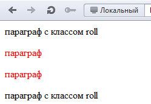

Селекторы CSS – точечное применение свойств CSS к элементам страницы (тегам) | Оптимизация HTML за счёт использования селекторов
"Все аспекты самостоятельного создания и продвижения сайтов
от практика с многолетним опытом." — блог Рудь Сергея
info@site-on.net
Раздел: Создание сайта / HTML + CSS
Здравствуйте дорогие подписчики и не менее дорогие гости Site on! Надеюсь, вам были интересны предыдущие статьи раздела HTML + CSS, потому как сегодня скучать точно не придётся, ведь мы рассмотрим такое понятие как селекторы CSS и как с их помощью мы можем сократить нашу разметку HTML, сделав её чище.
Селектор CSS – это тот элемент, к которому мы собираемся применять CSS свойства. Слово «селектор» говорит само за себя, оно обозначает выбор.
p {color: red}
div span {background: green}
ul li {list-style: none}
Селекторы class и id
В примере выше мы имеем 3 селектора – это p, div span, ul li. То есть весь наш файл стилей состоит из селекторов и их свойств. Наиболее удобно и наглядно, особенно новичкам, брать за селектор имя класса (class) тега или уникальный идентификатор (id) тега. Чтобы присвоить класс или идентификатор какому-либо тегу, мы должны указать их среди атрибутов этого тега. У конкретного тега может быть максимум 1 идентификатор и бесконечное число классов. Пример:
<div id="first">текст в первом диве</div>
<div class="second">текст во втором диве</div>
<div id="third" class="first second third">текст в третьем диве</div>
На что стоит обратить внимание:
Как обратиться к классу или id в файле стилей (CSS)?
Смотрим пример:
#first {color: red;} /* обращаемся к id с именем first */
.second {color: blue;} /* обращаемся к классу с именем second */
#first .second {color: orange;} /* обращаемся к классу с именем second, ТОЛЬКО если он находится ВНУТРИ тега с идентификатором first */
.first .third {color: grey;} /* обращаемся к классу с именем third, ТОЛЬКО если он находится ВНУТРИ тега с классом first */
В нашем случае последние две инструкции не сработают, так как у нас нет классов, вложенных внутрь тегов с заданными атрибутами. Как вы могли заметить, чтобы обозначить, что мы обращаемся именно к id, нужно перед его именем без пробелов поставить знак решётки (#), если мы обращаемся к классу, то перед именем класса должны поставить точку (.).
Использование классов и идентификаторов очень удобно, но оно увеличивает нашу HTML разметку, в идеале (которого никогда нет) мы вовсе не должны их использовать, вместо них мы будем использовать комбинации и группировки селекторов, о них и будет вся остальная часть статьи, но! Но это совсем не означает, что вы должны полностью отказаться от использования классов и идентификаторов, просто вы должны иметь ввиду, что очень часто вместо создания нового class или id можно обойтись приёмами, описанными ниже и они также могут быть вполне удобны.
В чём различие class и id?
Кроме приведённых выше различий, стоит ещё отметить, что у свойств заданных id приоритет выше, чем у свойств, заданных классу. То есть, если мы напишем:
<style>
#first {color: red;}
.blue {color: blue;}
</style>
<div id="first" class="blue">текст в диве</div>
То цвет текста станет красным, несмотря на то, что класс находится ниже по коду и если бы у них был равный приоритет текст стал бы синим.
По синтаксису: в случаи с классом мы можем выбрать, у какого именно тега должен находиться данный класс, для этого после имени тега БЕЗ пробела мы должны обратиться к классу. Пример:
.myclass {свойства} /* применятся ко всем тегам, которые содержат класс myclass */
div.myclass {свойства} /* применятся только к тегам div, которые содержат класс myclass */
Для id это тоже будет работать, но такая запись лишена всякого смысла, так как id не может повторяться на странице, а значит достаточно просто объявлять id, без тега к которому оно относится:
<style>
#super {свойства} /* правильно */
div#super {свойства} /* Неправильно, но работать будет */
</style>
<div id="super">текст</div>
Вроде бы осталось только одно неоговорённое отличие, и оно касается темы, которую в ближайшем будущем я не планировал затрагивать на этом блоге – Javascript. Но всё же обязан доложить вам о нём: если вы хотите обратиться к элементу с помощью Javascript, то для этой цели очень удобным будет наличие id у этого элемента. Чтобы обратиться к элементу по его классу в Javascript нет такой встроенной возможности, вам придётся использовать вспомогательные функции + это не всегда кроссбраузерно.
Итог: id и class используем, но в меру, при этом всегда спрашивая себя, а можно ли здесь обойтись без них и насколько это целесообразно.
Родственный селектор
Идём дальше. Из статьи о наследовании в CSS вы уже знаете о двух самых простых видах селекторов, это селектор по тегу (элементу) и по потомку. Давайте освежим вашу память:
div p {color: green;} /* Селектор по потомку */
p {color: red;} /* селектор по тегу */
Но как я уже писал в предыдущей статье, в первом случае CSS свойства применятся ко всем тегам p вложенным на ЛЮБУЮ глубину тега div. А что если мы хотим применить свойства только к прямым наследникам, то есть к первому уровню вложенности:
<p>Прямой наследник (первый уровень)</p>
<span>
<span>
<p>Третий уровень</p>
</span>
</span>
<p>Прямой наследник (первый уровень)</p>
<span>
<p>Второй уровень</p>
</span>
<p>Прямой наследник (первый уровень)</p>
</div>
В таком случае мы должны использовать так называемый родственный селектор, для его обозначения используется угловая скобка, пробелы можете ставить, можете не ставить, я бы не советовал:
div>p {color: blue;} /* только первый уровень вложенности */
div p {color: blue;} /* абсолютно все параграфы внутри div */
Универсальный селектор
С этим разобрались, у нас на вооружении уже 3 вида селекторов, теперь хочу вам рассказать о весьма необычном селекторе, который выделяется среди всех остальных – это так называемый универсальный селектор, который обозначается звёздочкой (*):
* {margin: 0; padding: 0;}
Так у меня начинается каждый новый проект, советую вам делать также. Универсальный селектор распространяется на все элементы страницы (теги), но имеет нулевой приоритет (ниже только отсутствие приоритета вовсе). Его обычно используют, чтобы перебить CSS свойства, которые браузеры устанавливают по умолчанию для некоторых тегов. Представьте себе, и такое имеет место быть! Достаточно многим тегам браузеры по умолчанию устанавливают свои свойства, например, тегу гиперссылки <a> синий цвет текста и подчёркивание, тегу body они задают поля (padding) и тд. Нам это запоминать, знать и использовать совсем не к чему, поэтому самые банальные свойства мы сразу же убираем с помощью универсального селектора, однако я бы не советовал дописывать в него что-то ещё (или дописывать, но аккуратно), несмотря на наименьший (нулевой) приоритет универсального селектора, он в некоторых случаях всё же может перебить вам другие свойства, так что имейте это в виду.
Кстати говоря, при работе с селекторами, как и при любой работе связанной с вёрсткой макета очень удобно использовать просмотр элементов страницы. Если вы ещё не в курсе таких вещей как Opera Dragonfly, Firebug и веб-инспекторы в целом, то вам без преувеличений срочно нужно прочесть статью по ссылке выше! А кто уже использовал подобные вещи, прошу дальше за мной.
Псевдо-классы
В отличие от классов, псевдо-классы не нужно указывать в HTML разметке, они сами вычисляются браузером. У нас есть 4 статических псевдо-класса и 3 динамических псевдо-класса, без учёта CSS 3, о нём ближе к концу. К статическим относятся ( :first-child, :link, :visited, : lang() ):
<style>
p:first-child {color: green;} /* сработает, если p является первым ребёнком своего родителя */
</style>
<div>
<p>Прямой наследник (первый уровень)</p>
<span>
<span>
<p>Третий уровень</p>
</span>
</span>
<p>Прямой наследник (первый уровень)</p>
<span>
<p>Второй уровень</p>
</span>
<p>Прямой наследник (первый уровень)</p>
</div>
Результат:

Естественно можно комбинировать селекторы как захотим, например:
div>span p:first-child {color: green;} /*сработает, если p является первым ребёнком своего родителя и находится внутри тега span, который является прямым потомком тега div */
Название представленного выше псевдо-класса говорит само за себя first-child - первый ребёнок.
Следующие два статических псевдо-класса применяются только к тегу гиперссылки (:link, :visited), они применяют CSS свойства в зависимости от того, посещалась данная ссылка конкретным пользователем или нет:
a:link {color: blue;} /* у не посещённых ссылок задаём синий цвет, и по умолчанию они подчёркнуты */
a:visited {color: green; text-decoration: none;} /* у посещённых ссылок текст будет зелёным, убираем подчёркивание */
Псевдо-класс :lang() используется для задания разного стиля оформления в зависимости от языка. В скобочках указывается язык, к которому нужно применить оформление. Это можно использовать, например, для задания разных стилей кавычек в цитатах:
q:lang(de) {quotes: "\201E" "\201C";} /* кавычки для немецкого языка */
q:lang(en) {quotes: "\201C" "\201D";} /* кавычки для английского языка */
q:lang(ru) {quotes: "\00AB" "\00BB";} /* кавычки для русского языка */
Это, пожалуй, единственный из всех возможных видов селекторов, который я никогда не использовал.
Динамические псевдо-классы
Динамические псевдо-классы – это :active, :hover, :focus. Динамические псевдо-классы срабатывают по определённому действию на странице, они работают для всех тегов, а не только для ссылок как многие думают и даже утверждают в своих блогах! Рассмотрим их применение:
p:active {background: red;} /* стиль, который применится к тегу по нажатию на него (клику мышью) */
input:focus {width: 400px;} /* стиль, который применится к элементу, на котором в данный момент фокус (работает, к примеру, для текстовых полей ввода: textarea, input). В данном случае по взятию в фокус, ширина input станет равна 400 пикселей, удобно использовать для красивого эффекта удлинения поля по клику. */
div:hover {background: green;} /* срабатывает по наведению курсора на элемент, в основном применяется для создания красивого эффекта при наведении на ссылки. */
Примените данные стили к нашему примеру выше, и вы сами всё увидите.
Смежные селекторы
Смежные селекторы – это ближайший сосед ниже по коду, не ребёнок! Очень удобный селектор:
<style>
div + p {background: green; color: white;} /* Применить свойства к тегу p, если сразу после закрывающегося тега div открывается тег p */
p + span {background: orange;} /* не сработает, так как у нас нет открывающегося тега span, сразу после закрывающегося тега p */
</style>
<div>
<p>текст в параграфе первого div</p>
</div>
<p>текст в параграфе ВНЕ div</p>
<div>
<p>текст в параграфе второго div</p>
</div>
<span>текст в спане</span>
<p>снова параграф вне div</p>
Результат:

Обобщённые смежные селекторы
Обобщённые смежные селекторы действуют точно также как и обычные смежные селекторы, за исключением того, что свойства применяются не только к первому соседу ниже, а ко всем заданным соседям ниже:
<style>
div~p{color: green;}
</style>
<div>текст в диве</div>
<p>параграф</p>
<p>параграф</p>
<p>параграф</p>
<span>текст в спане</span>
<p>параграф</p>
<p>параграф</p>
<div>
<p>параграф в диве</p>
<p>параграф в диве</p>
</div>
<span>текст в спане</span>
<p>параграф</p>
Результат:

Селекторы атрибутов
Селекторы атрибутов позволяют нам обратиться к тегам, имеющим необходимый нам атрибут или даже конкретное его значение:
p[align] {свойства} /* применить ко всем тегам p, у которых есть атрибут align */
p[align="center"] {свойства} /* где значение атрибута align равно center */
p[align^="center"] {свойства} /* где значение атрибута align начинается на center */
p[align*="center"] {свойства} /* где значение атрибута align содержит center */
p[class~="site"] {свойства} /* где site может находиться среди других слов, отделенных пробелами (<p class="support site magazine"></p>) */
p[class|="site"] {свойства} /* где значение атрибута class состоит только из слова site или начинается им, после чего ставится дефис и пишется остальная часть значения (<p class="site-On"></p> или <p class="site-off"></p>) */
p[class$="site"] {свойства} /* где значение атрибута align заканчивается на site */
CSS 3 псевдо-классы
Вы уже ознакомились со всеми основными селекторами и вам на первых парах этого должно хватить с горкой. Однако в CSS 3 появилось множество новых псевдо-классов, теперь мы можем брать не только первого ребёнка, но и любого другого по счёту, можем идти от обратного, брать не первого, а последнего ребёнка и так далее и тому подобное. Всё это очень удобно и практично, разве что у вас могут возникнуть проблемы со старыми версиями IE. Давайте соберём все силы в кулак и пробежимся по всем оставшимся селекторам, чтобы потом уже вы могли иметь их ввиду при вёрстке собственного макета.
:last-child – аналог :first-child, только берёт не первого, а последнего ребёнка.
:only-child – сработает, если элемент (тег) является единственным ребёнком.
:only-of-type - сработает, если элемент (тег) является единственным ребёнком своего типа.
:nth-child() – обращается к потомкам по их порядковым номерам, можно обращаться ко всем чётным или нечётным (even или odd) числам. Например:
<style>
div p:nth-child(5) {background-color: green;} /* Обращаемся к 5 по счёту ребёнку, если он является тегом p. */
div p:nth-child(2n) {background-color: yellow;} /* Обращаемся к каждому второму ребёнку, если он является тегом p. */
div p:nth-child(2n+6) {background-color: red;} /* Обращаемся к каждому второму ребёнку начиная с шестого, если он является тегом p. */
</style>
<div>
<p>параграф</p>
<p>параграф</p>
<p>параграф</p>
<span>текст в спане</span>
<p>параграф</p>
<p>параграф</p>
<p>параграф</p>
<p>параграф</p>
<p>параграф</p>
<p>параграф</p>
</div>
Результат:

:nth-last-child – работает также как и предыдущий, но отчёт начинается с конца.
:first-of-type – первый ребёнок своего типа в рамках прямого родителя.
:last-of-type – последний ребёнок своего типа в рамках прямого родителя.
:empty – сработает для тех тегов, внутри которых нет ни одного символа (без текста).
:not() – делает исключение для заданных элементов. Пример:
<style>
p:not(.roll) {color: red;} /* для всех параграфов на странице делаем красный цвет текста, за исключением параграфов с классом roll */
</style>
<p class="roll">параграф с классом roll</p>
<p>параграф</p>
<p>параграф</p>
<p class="roll">параграф с классом roll</p>
Результат:

Управление полями, формами, переключателями и флажками в CSS
:enabled - применяется к доступным элементам интерфейса как формы, кнопки, переключатели и тд. По умолчанию все элементы интерфейса являются доступными.
:disabled - применяется к заблокированным элементам интерфейса как кнопки, формы и так далее. Элементы интерфейса являются заблокированными, если к ним в HTML добавить атрибут disabled или в XHTML disabled=”disabled”.
:checked – применяется к элементам интерфейса типа переключатели (radio) и флажки (checkbox), когда они находятся во включённом положении.
Псевдо-элементы
Псевдо-элементы, аналогично псевдо-классам вычисляются браузером автоматически, нам об этом заботиться не нужно. Чтобы не путать псевдо-элементы с псевдо-классами в спецификации CSS 3 было решено использовать двойное двоеточие, вместо одинарного, как было в CSS 2. Поэтому в Интернете вы можете встретить псевдо-элементы как с одинарным двоеточием так и с двойным – и тот и тот вариант верен. Однако для лучшей совместимости с IE рекомендуют использовать одинарное двоеточие.
:first-line – первая строка внутри блочного или табличного элемента.
:first-letter – первая буква внутри блочного элемента.
:before и :after – используются чтобы с помощью CSS вставить содержимое до или после элемента, к которому они относятся, лично я ими не пользовался, поэтому сильно расписывать не буду. А как часто вы используете данные псевдо-элементы в своих проектах? Можете поделиться своим опытом в комментариях к данной статье.
Итоги: теперь вы знаете и можете использовать всю мощь каскадных таблиц стилей, однако это не значит, что нужно сразу ринуться верстать макеты сайтов, используя как можно больше изученных сегодня селекторов, псевдо-классов и псевдо-элементов. Я перечислил все возможные инструменты, а вы должны выбрать лишь самое нужное для себя.
Преимущества оптимизации HTML за счёт CSS
Суть всего написанного выше отчасти заключается в том, чтобы отказаться от повсеместного использования атрибутов class и id в HTML, тем самым возложив всё на плечи могучих таблиц стилей.
Внешние файлы стилей, как и внешние файлы Javascript отлично кэшируются, а это значит, что зайдя первый раз на любую страницу вашего сайта, браузер пользователя запоминает эти файлы и более их не скачивает, в отличие от самой страницы сайта, то есть вашей HTML разметки, картинок и текста, которую браузер загружает снова и снова. Тоже самое касается и поисковых систем, им вообще нет дела до ваших внешних файлов, но вот до объёма и содержания вашей HTML разметки им дело есть. Поисковым системам приходится сканировать всю структуру страницы и в ваших же интересах помочь им в этом, сосредоточить их усилия на контенте, а не на громоздкой стене разметки состоящей из кучи классов и идентификаторов или того хуже – Javascript обработчиков событий и CSS стилей прямо в атрибутах тегов (и такое до сих пор бывает).
Вы можете со мной поспорить, мол, мы можем заставить клиентский браузер скачивать себе в локальную среду все подключаемые файлы, картинки, закэшировать всю страницу целиком и так далее и тому подобное. На таком фоне подобная мелочь совсем теряется, но так или иначе максимально сократив HTML разметку, вы только выигрываете, при этом ничего не потеряв, кроме возможной привычки.
Подытожим: благодаря оптимизации и сокращению HTML мы имеем совсем небольшой выигрыш в скорости загрузки сайта и в SEO (поисковой оптимизации), а также более чистый код.
С уважением, Сергей Рудь.
<< Предыдущая статьяСледующая статья >>
Пожалуйста, оцените эту статью
Средняя оценка: 4.87 из 5 (проголосовало: 316)
Статья оказалась вам полезной? Подпишитесь, чтобы не пропустить новые!
Ваш email:
Вы можете помочь развитию проекта, сделав всего 1 клик:
Спасибо!
Пожалуйста, прокомментируйте, как Вам моя статья?
Имя:
Комментарий:
Если Вы хотите вставить код, пожалуйста, заключайте его в [code][/code]
Подписаться на новые комментарии:
Защита от спама: у треугольника три...
Ответ:
Подписаться на новые комментарии без комментирования - Email:
Защита от спама: у треугольника три...
Ответ:
26.08.2013 17:09:32 Олег:
"То цвет текста станет красным, несмотря на то, что класс находится ниже по коду и если бы у них был равный приоритет текст стал бы синим." Не станет, потому что в теге стиля указан #first {color: red;} а идентификатор id="footer" - не совпадают ни разу ;)
26.08.2013 19:05:48 Сергей отвечает:
Спасибо, что заметили, исправил.
13.10.2013 07:44:32 Александр:
Отличные статьи! Для новичка в самый раз, но в данной Вы перепутали:
Цитата:
p[align*=" center"] {свойства} /* где значение атрибута align заканчивается на center */
и
Цитата:
p[class$="site"] {свойства} /* где значение атрибута class содержит site */
друг с другом.
19.10.2013 13:44:14 Сергей отвечает:
Вы правы, спасибо, исправил статью.
25.04.2014 22:53:59 Александр:
В этом примере кода, кажись, одна угловая скобка в самом начале лишняя (опечатка)?
<div>span p:first-child {color: green;} /*сработает, если p является первым ребёнком своего родителя и находится внутри тега span, который является прямым потомком тега div */
Спасибо!
25.04.2014 23:27:10 Александр:
В примере про селекторы атрибутов тоже опечатка:
стоит так: p[align*=" center"] {свойства} /* где значение атрибута class содержит site */
Видимо, подразумевалось "где значение атрибута align заканчивается на center */"
26.04.2014 13:07:07 Сергей отвечает:
Исправил опечатки, спасибо. Но нет, не заканчивается на center, а содержит center в любом месте (в начале, в середине, в конце). center может быть частью другого слова.
30.06.2014 02:37:05 Влад:
К сожалению не описан случай комбинирования селекторов <div class="abc xyz" id="def"></div>. Как в таком случае прописывать свойства:
.abc #def{
color: blue;
}
Так или иначе? А то я запутался.
30.06.2014 08:36:53 Сергей отвечает:
Напишите, пожалуйста, что Вам нужно сделать? Писать .abc #def нет смысла, так как #def (как и любой другой id) - встречается один раз на странице, об этом я писал. Поэтому если Вы хотели обратиться именно к id, то:
#def{
color: blue;
}
Но Ваша запись тоже будет работать.
30.08.2014 11:33:53 Мих отвечает:
Возможно Влад хотел сказать о возможности прописывать несколько классов через пробел
class="abc xyz"
06.10.2014 20:29:36 Tokushirou:
div>span p:first-child {color: green;} /*сработает, если p является первым ребёнком своего родителя и находится внутри тега span, который является прямым потомком тега div */
здесь у меня правило работает и для "третий уровень"
т.е. для div-span-span-p хотя span-p прямой потомок span а не div
как так?
07.11.2014 07:43:27 Сашок отвечает:
Мой маил info@whatswap.ru//// у меня такой вот вопрос разве такое можеть быть <div class="log txt"> так можно писать? и если можно тогда как на CSS имя класса писать // пробывал так . log txt { }; не работает. Уважаемый Админ пожалуйста подскажите )))) Плиз
08.11.2014 10:34:03 Сергей отвечает:
Такое может быть. Обращаться вот так: .log.txt{}
26.11.2014 21:54:40 Владимир:
Действительно хорошая статья. Но вот имеется интересный вопрос, задачка, которую сложно решить - в хтмл-е у нас есть список, в каждом пункте которого теги "а", в которые в свою очередь вложены "img"(которых изначально там не было), всё это "растянуто" в кнопки менюшки сайта через id-шку buttons.
#buttons {
width: 100%;
border-radius: 8px;
-moz-border-radius: 8px;
-khtml-border-radius: 8px;
-webkit-border-radius: 8px;
background: -webkit-gradient(linear, left top, left bottom, from(#444444), to(#000000));
background: -moz-linear-gradient(top, #444444, #000000);
background-image: -o-linear-gradient(top,rgb(68,68,68), rgb(102,102,102));
filter: progid:DXImageTransform.Microsoft.gradient(startColorstr='#444444', endColorstr='#000000');
border: none;
list-style: none;
padding: 0;
margin: 0;
float: left;
box-shadow: 0 1px rgba(0,0,0,.1) inset, 0 0 5px 1px #ff0000;
}
При наведении(то есть hover)оформление этих кнопок меняется, а прописано через:#buttons li a:hover {}
Добавив на эти "кнопки" иконки я их соответственно оформил(внеш. внутр. тени, радиус и т. д.) через отдельный класс для тегов "img":header .images {}
В итоге нужно динамику изменения внешнего вида кнопок и иконок на них привязать на один "hover", но у обоих есть взаимоисключающие параметры(радиусы и фон)... Как без изменения блоков кода это дело организовать, уже много всего испробовал, но чувствую, что выход должен быть.
30.12.2014 13:47:42 Юрий отвечает:
Напишите хтмл, чтоб понятна была структура меню
30.12.2014 14:17:17 Юрий отвечает:
А вообще? не вижу проблемы. Написать два раза стили
1. a:hover {стили для кнопки}
2. a:hover img{ стили для картинки }
04.01.2015 18:09:04 Владимир отвечает:
Юрий, Ваш вариант не подходит, сейчас так и сделано(я правда пока ушел на наузу, некогда вникать в это), код о котором идет речь можете взглянуть тут: http://jsbin.com/yezijekaji/1/edit?html,css,output Проблема этого способа в том, что размер кнопки сильно отличается от размера изображения, в итоге при подводе к краюшку кнопки изменений в картинке не происходит, ну собственно по ссылке всё прекрасно видно.
04.01.2015 23:28:26 Юрий отвечает:
Ну так я правильно Вам написал в предыдущем комменте. Напишите два ховера на тег а.
У Вас там два ховера на два разных элемента:
- .images:hover (этот на <img>)
- a:hover (этот на <a>)
Переделайте
.images:hover
на
a:hover .images
и будет Вам счастье
24.12.2014 00:02:04 Вячеслав:
Отличная статья. Добавить только бы про специфичность и приоритетность.
13.11.2015 23:10:07 Ром:
спасибо, очень доходчиво!
некоторые опечатки:
a:visited {color: green; text-decoration: none;} /* у посещённых ссылок текст будет красным
p[class$="site"] {свойства} /* где значение атрибута align заканчивается на center */
флажки (radio) и переключатели (checkbox)
14.11.2015 11:03:25 Сергей отвечает:
Спасибо, исправил.
04.01.2016 22:10:20 Александр:
Хорошо но не нашел про то что искал
07.05.2016 10:09:52 Ник:
Здравствуйте, Сергей, большое спасибо за статью! Я во всем этом совсем новичок и у меня возникла следующая проблема:
если
p:active {background: red;}
input:focus {width: 400px;}
div:hover {background: green;}
Поместить не в style в разметке, а в CSS, то ничего не работает. Можете подсказать, что я делаю не так?
07.05.2016 14:01:32 Сергей отвечает:
Добрый день. Что значит поместили в CSS ? Вы имели ввиду поместили в отдельный файл с расширением .css? Возможно, указан неправильный путь.
Посмотрите в консоли браузера, есть ли ошибки (CTRL+SHIFT+I для Opera & Chrome)
07.05.2016 14:03:17 Сергей отвечает:
Либо у вашей записи приоритет ниже. Другие CSS правила переписывают (перекрывают) Ваши.
07.05.2016 17:32:30 Ник отвечает:
Спасибо большое за ответ! Пeть верный, а в файле эти строки нечему переписывать. Через консоль посмотрел, ошибка есть: ругается, что "p" - unknown property name (при помещении в style в html все работает, но хотелось бы знать, как через css все это работать заставить)
07.05.2016 17:34:52 Ник отвечает:
Все, спасибо, разобрался.
Нужно было убрать все это из "body {}"
07.05.2016 17:35:04 Ник отвечает:
Все, спасибо, разобрался.
Нужно было убрать все это из "body {}"
20.05.2016 13:01:43 Андрей:
Здравствуйте!
Можно ли с помощью псевдо-класса first-child назначить картинке вложенной в список свой стиль оформления (больший размер)? Стиль первого элемента li изменяется, а вот картинка вложенная в него - нет.
03.09.2016 02:48:50 Леонид:
Здравствуйте
Подскажите, возможно ли средствами CSS выделить строки 10-13 и 16-19 (всего 8 шт.):
<td id="symbolNameXXX"><a href="/xxx/yyy" class="kkkk"> MMMM</a>
<input id="Ip4" style="display:none" value="
<table class='ppppp kkkkkk'>
<th class='padd5'>Name</th>
<th class='padd5'>Action</th>
<tr>
<td rowspan='3'>MMMM</td>
</tr>
<tr>
<td>Left</td>
<td>56</td>
<td>4582</td>
<td>7852</td>
</tr>
<tr>
<td>Right</td>
<td>15</td>
<td>4518 Lots</td>
<td>4321</td>
</tr>
</table>
</td>
29.09.2016 13:12:04 Евгений отвечает:
Вот читаю о псевдо-селекторах и понимаю, какие мы с вами задроты для обычных людей...
13.10.2016 19:53:35 Сергей отвечает:
:)
01.03.2017 18:14:59 Кирилл:
Хорошая статья! Но передо мной стоит задача задать свойства родителю при нажатии кнопкой мыши на родителя. Есть способы, как это сделать?
06.03.2017 15:20:45 Алексей:
Подскажите как правильно перечислить в скобке где цыфра 2 ещё цыфры?
.jshop_list_category > table > tbody > tr:nth-child(1) > td:nth-child(1) > table > tbody
{border: 1px solid #CCC;}
20.01.2019 01:27:09 Иван:
Спасибо за труды, кое что подчерпнул! Но заметил недочеты как я считаю:
1. Грубая ошибка, нельзя блочные элементы вкладывать в строчные.
<span>
<p>Третий уровень</p>
</span>
2. * {margin: 0; padding: 0;} - такая конструкция будет нагружать браузер, не советую
20.11.2020 14:01:42 Наталья отвечает:
Параграф, вроде, и есть строчный элемент, если его не объявили блочным специально?
11.07.2020 20:43:05 irmaseo.ru:
Очень полезная информация, спасибо
17.02.2021 21:03:46 Павел:
Спасибо большое, Сергей, за ваш труд!
17.04.2021 20:11:55 Владимир:
фывфывафыв
�